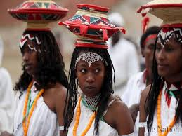

Ethnocentrism in social science and anthropology—as well as in colloquial English discourse—means to apply one's own culture or ethnicity as a frame of reference to judge other cultures, practices, behaviors, beliefs, and people, instead of using the standards of the particular culture involved. Since this judgement is often negative, some people also use the term to refer to the belief that one's culture is superior to, or more correct or normal than, all others—especially regarding the distinctions that define each ethnicity's cultural identity, such as language, behavior, customs, and religion.[ In common usage, it can also simply mean any culturally biased judgment.[2] For example, ethnocentrism can be seen in the common portrayals of the Global South and the Global North. Ethnocentrism is sometimes related to racism, stereotyping, discrimination, or xenophobia. However, the term "ethnocentrism" does not necessarily involve a negative view of the others' race or indicate a negative connotation.[3] The opposite of ethnocentrism is cultural relativism, which means to understand a different culture in its own terms without subjective judgments.The term "ethnocentrism" was first applied in the social sciences by American sociologist William G. Sumner. In his 1906 book, Folkways, Sumner describes ethnocentrism as "the technical name for the view of things in which one's own group is the center of everything, and all others are scaled and rated with reference to it." He further characterized ethnocentrism as often leading to pride, vanity, the belief in one's own group's superiority, and contempt for outsiders.

The following are negative effects of ethnocentrism. First, ethnocentrism creates an opinion that their culture as superior one and other culture inferior and bad (Hooghe, in Njoroge & Kirori, 2014;Zikargae, 2013). Jandt andGudykunst (2004 in Zikargae, 2013) explain that ethnocentrism is a belief in superiority of one's own ethnic and culture and this nature is unavoidable. .... Ethnocentrism is a belief of one group is superior to others as stated by many experts such as Jandt and Gudykunst (2004 in Zikargae 2013) and Hooghe (2008). Because ethnocentrism sees one's culture as the superior one, it has a tendency to make people evaluate and judge other cultures based on their standard (Zikargae, 2013). The following are quotations representing ethnocentrism makes people believe that their culture is the best culture
This study examines the relationships among cultural factors, contiguity, and the onset of interstate war. These concerns are nested within a larger debate about "ethnic conflict" that assumes the salience of cultural variables in interstate conflict. Arguing that much of the research on ethnic conflict assumes rather than demonstrates the salience of cultural factors on conflict, the analysis is grounded in a comparison of the relative weight of ethnic and religious similarity among state dyads in predicting the frequency of interstate war. A logit regression is specified and tested for pairs of states in the system from 1820 to 1989. Controlling for contiguity, ethnic similarity has a direct association with war, whereas religious dissimilarity is inversely correlated with war. Cultural variables are neither monolithic nor unidirectional in their impact on conflict. Scholars should eschew the promulgation of problematic categories such as ethnic conflict and instead move toward systematically determining the salience of ethnic and religious factors in international conflict.